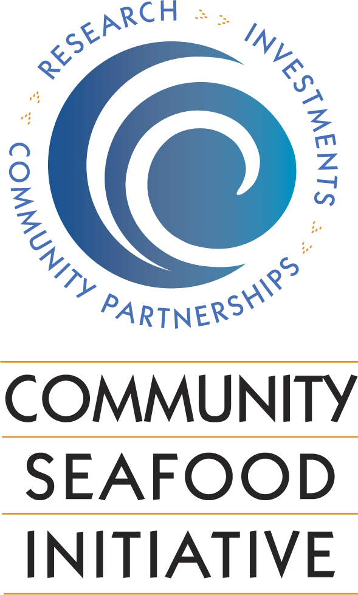

|  |
|
Welcome to The Community Seafood Initiative!
We provide access to relevant information, applied research, and innovative
economic �opportunities through a unique partnership with Oregon State
University's Coastal Oregon Marine Experiment Station, the Seafood Lab and
Food Innovation Center as well as �Enterprise Cascadia. Recent projects
include preserving seafood-related working �waterfronts and offering
value-added product development services.
As the owner of Fish Trax™ The Community Seafood Initiative has pioneered
the design and implementation of a powerful electronic fishery information
system to support �sustainable fisheries and deliver essential information
to key markets and audiences.
We have partnered with leading universities around the country on a unique
program �called Seafood Health Facts - dedicated to demystifying seafood in
a world of confusing �and contradictory claims and counterclaims. Seafood
Health Facts is designed to educate health care professionals and consumers
alike on balancing the benefits and risks of �seafood consumption.
Led by Executive Director Heather Mann, The Community Seafood Initiative is
governed �by a 9-member board of directors and is headquartered in Newport, Oregon.